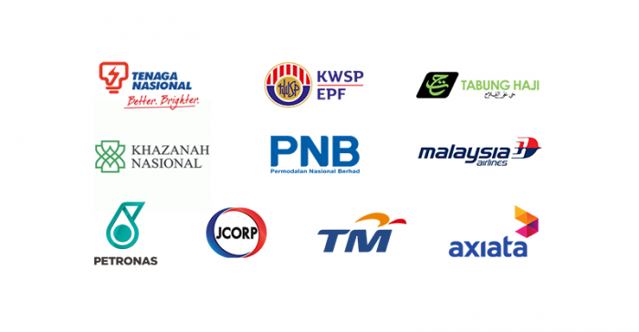

My Future Plan :

|
 |
|---|---|
|
Looking ahead, my goal over the next three years is to pursue a career as a Data Analyst, with a long-term ambition to specialise in Data Science. I am deeply fascinated by how data can uncover insights, tell stories, and drive impactful decisions — especially across industries such as business, healthcare, and technology. I’m also passionate about emerging technologies like Artificial Intelligence (AI) and Cloud Computing, and I plan to deepen my expertise through courses, certifications, and hands-on projects. I aspire to gain industry experience by joining a Government-Linked Company (GLC) such as PETRONAS, Telekom Malaysia (TM), or Tenaga Nasional Berhad (TNB), where I can work with real-world data at scale and contribute to impactful national initiatives. By combining data analytics with AI and cloud-based solutions, I aim to drive innovation, improve system efficiency, and create solutions that benefit society. Over the next few years, I hope to collaborate on meaningful projects, grow my technical capabilities, and evolve into a well-rounded tech professional committed to contributing value through data and technology. |
|